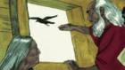
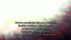

injilchaoui
Menu
Home
Contact Us
Links
Download
All Videos
All Audios
Our Android App
Site Language
French
Submit
Watch Videos
The Story of Amsiggel
The Good News
The Story of the Prophets
50 Bible Stories

The Magdalena Film
The Jesus Film
The Book of Genesis

The Psalms